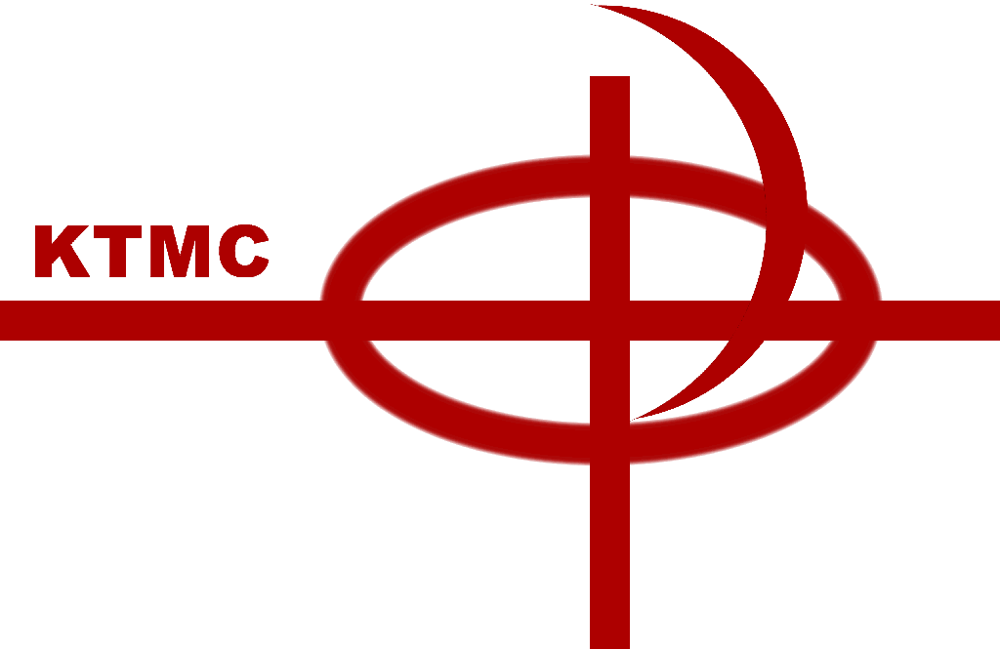

和樂邨・巴士到站時間顯示
WO LOK ESTATE BUS ETA DISPLAY SYSTEM
協和街 Hip Wo Street ｜ 觀塘瑪利諾書院 Kwun Tong Maryknoll College測試中 TESTING
--°C
濕度 --%
天文台
HKO
HKO
--:--
----年--月--日
---
▼
南行SOUTHBOUND
往觀塘市中心・九龍・港島 To Kwun Tong / Kowloon / HK Island
1/1
路線 ROUTE目的地 DESTINATION月台 STOP到站時間 ARRIVALS
▲
北行NORTHBOUND
往寶林・翠林・四順・秀茂坪・寶達 To Po Lam / Tsui Lam / Shun Lee / Sau Mau Ping / Po Tat
1/1
路線 ROUTE目的地 DESTINATION月台 STOP到站時間 ARRIVALS